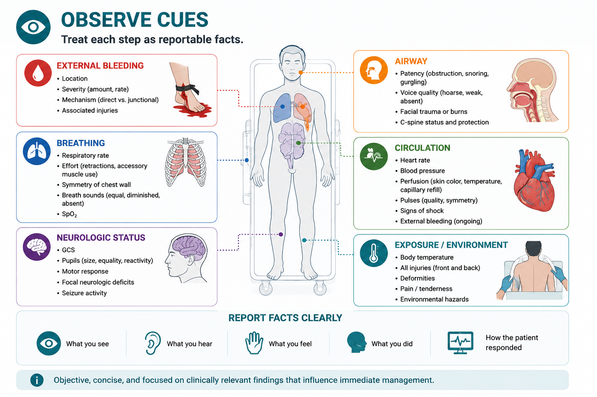
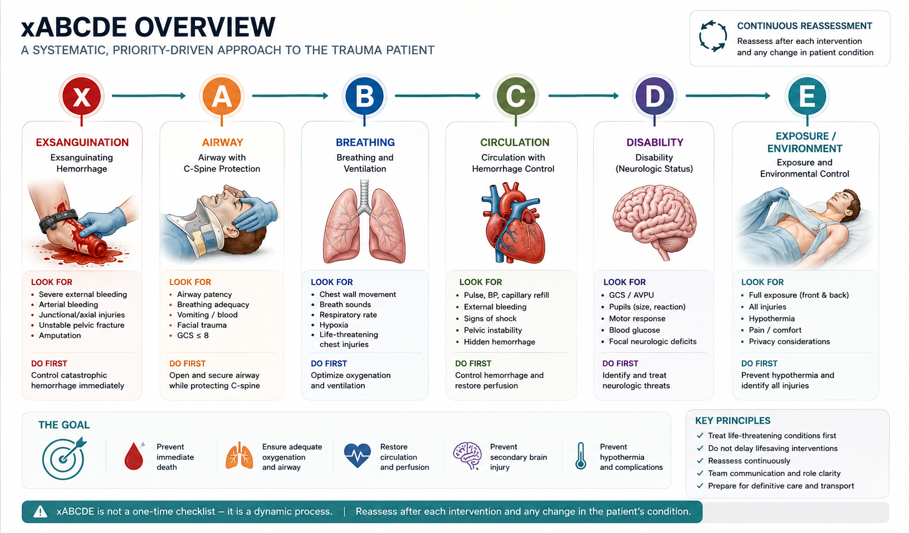
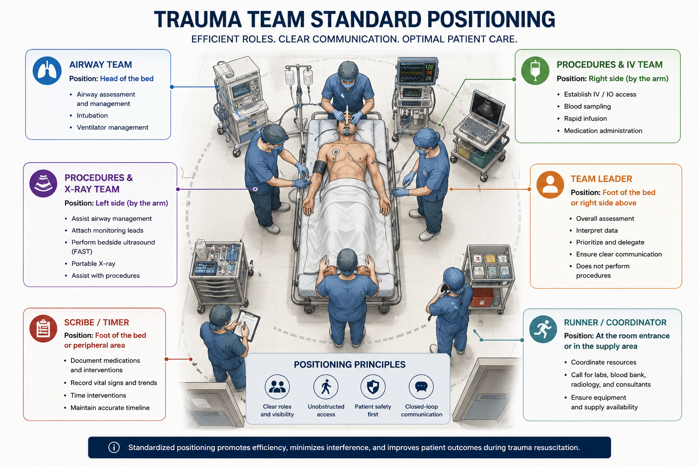
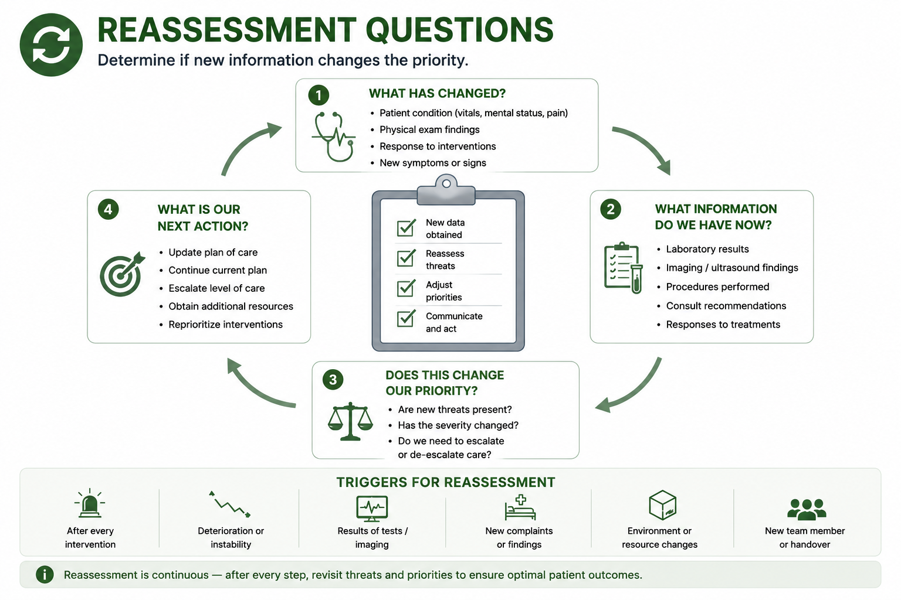
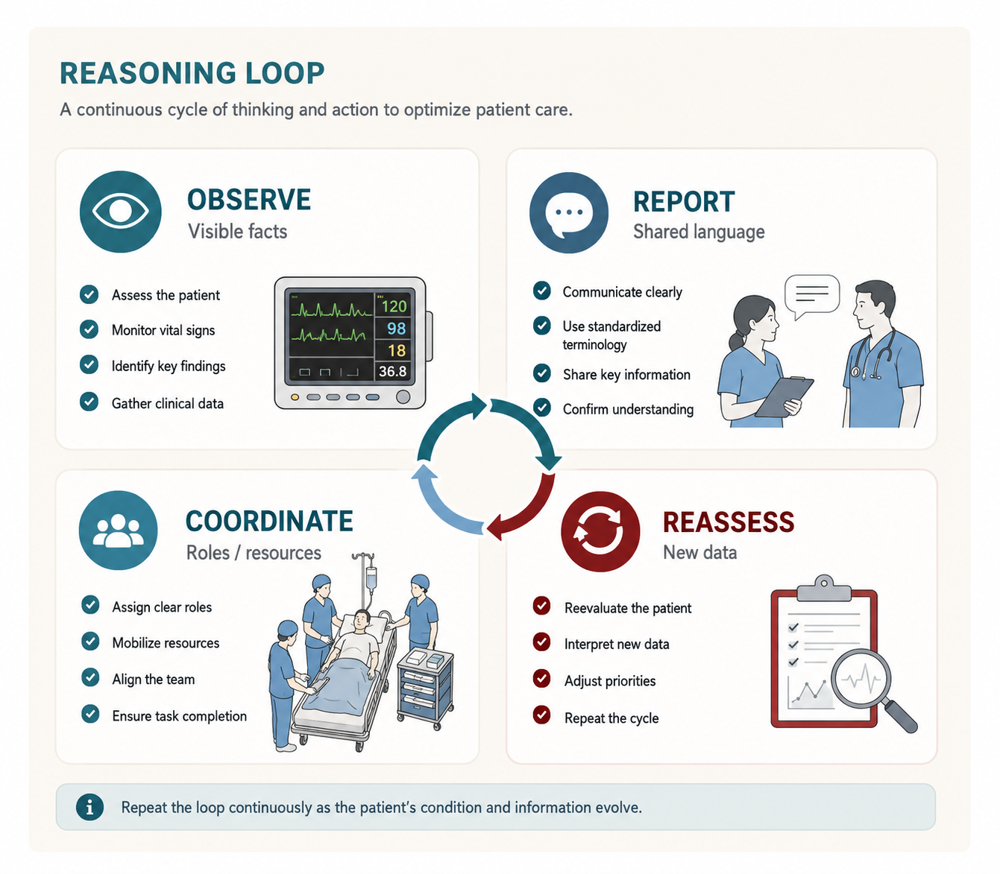
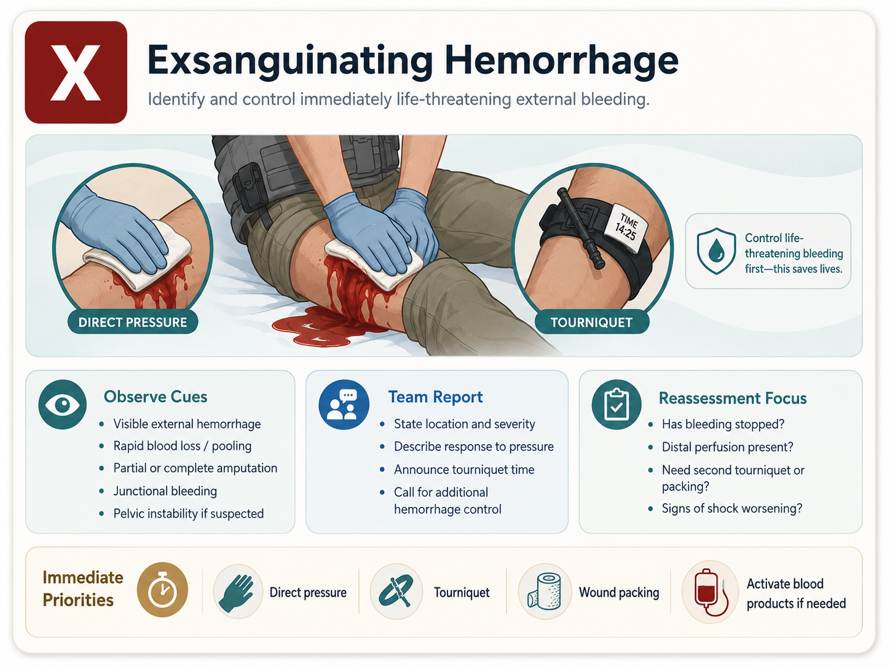
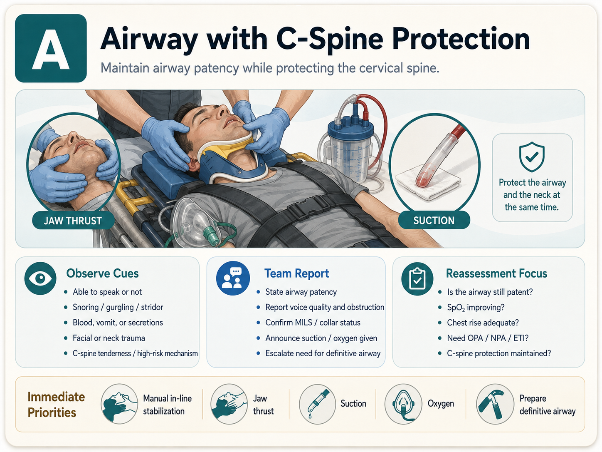
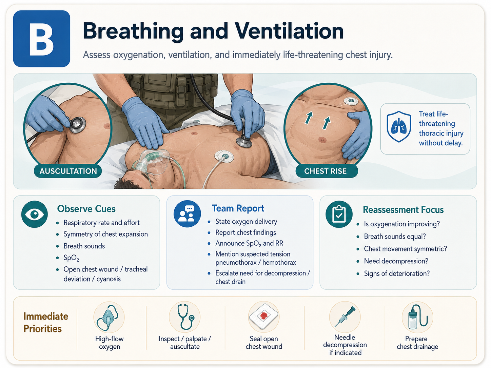
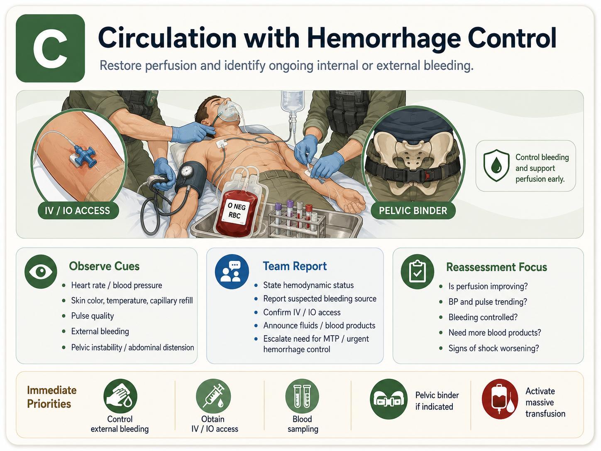
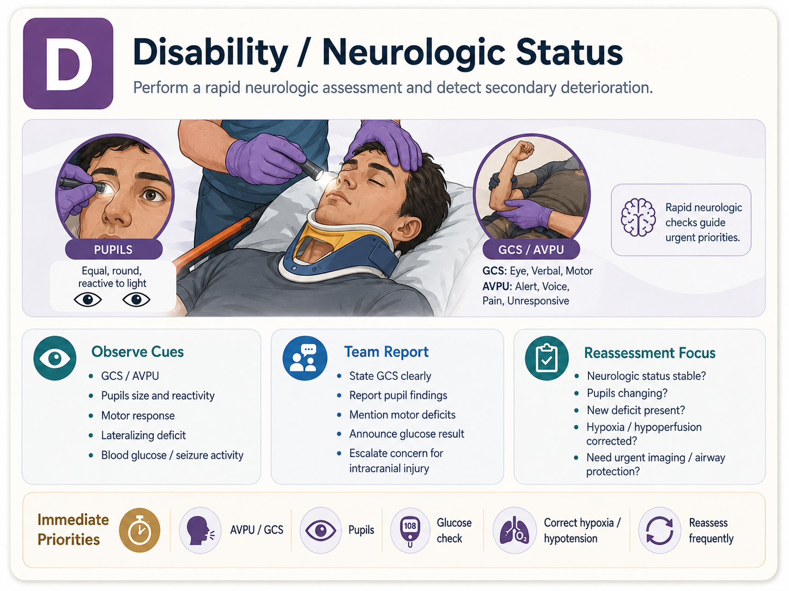

观察线索Observation cues
把每一步看成可报告事实。Treat each step as reportable facts.
待审核Pending review本课把 xABCDE 作为组织创伤信息的共同语言：先看明显威胁，再把气道、呼吸、循环、神经、暴露与再评估连成团队心智模型。This course treats xABCDE as shared language for organizing trauma information: visible threats first, then airway, breathing, circulation, disability, exposure, and reassessment as a team mental model.

同一门课支持快速复习、系统学习和病例推演。先选模式，再进入对应深度。The same course supports quick review, systematic learning, and case reasoning. Choose the mode before choosing depth.
用一张总览图回忆 x-A-B-C-D-E 与复评循环。Use one overview map to recall x-A-B-C-D-E and reassessment.
来源可查Source indexed 系统学习模式System Learning从 x 和 A 两个完整示范开始，学习“看图思考、判断、复评”。Start with full x and A examples: look, reason, judge, reassess.
待审核Pending review 病例推演模式Case Reasoning逐步释放院前、到院、初评和复评信息，观察选择如何改变患者状态。Release prehospital, arrival, primary survey, and reassessment data step by step.
教学示意Teaching schematic把六个字母变成观察、报告、团队行动和复评的循环。Turn six letters into a loop of observation, reporting, team action, and reassessment.


把每一步看成可报告事实。Treat each step as reportable facts.
待审核Pending review
青年医生负责识别、报告和协助。Early clinicians identify, report, and assist.
待审核Pending review
资源和检查信息是否改变风险排序。Whether resource and test information changes risk order.
待审核Pending review住院医师和实习医生常有疾病理论，却缺少进入抢救室后组织信息的方法。xABCDE 在本课件中不是处置算法，而是观察顺序、报告语言、团队协作和复评意识。Residents and interns may know disease theory but lack a method for organizing information in the trauma bay. In this courseware, xABCDE is not a treatment algorithm; it is observation order, reporting language, teamwork, and reassessment awareness.
本页不提供如果-那么的床旁指令，不替代上级医生和本地流程。This page does not provide if-then bedside instructions and does not replace senior clinicians or local policy.
骨盆、颅脑、胸部、腹部和多发伤模块都会回到同一套语言。Pelvis, TBI, chest, abdomen, and polytrauma modules all return to the same language.
初学者核心任务是识别风险、准确报告、协助准备、知道何时请上级。The learner's core work is recognizing risk, reporting accurately, assisting preparation, and knowing when to escalate.
ATLS/ETM 和本地流程相关表述需合法来源核验和医生终审。ATLS/ETM and local workflow statements require legal source verification and clinician signoff.


这张图用于训练学习者进入抢救室后先扫视床边、衣物、敷料和可见肢体，把能被团队立即听懂的事实说出来。This figure trains learners to scan the bedspace, clothing, dressings, and visible limbs, then report facts the team can immediately understand.
可见污染、敷料变化、床边痕迹。Visible soiling, dressing change, bedspace cues.
描述位置、变化和不确定点。State location, change, and uncertainty.
新发现是否改变优先级。Whether new findings change priority.

图中只表达观察与沟通：能否说话、气道声音、面颈部线索、颈椎保护状态和移动前的团队确认。The image only represents observation and communication: speech, airway sounds, face or neck cues, c-spine protection status, and pre-movement team confirmation.
声音、面颈部、保护状态。Voice, face or neck cues, protection status.
用中性语言报告风险线索。Report risk cues in neutral language.
上级、气道团队、本地流程。Senior clinician, airway team, local pathway.

插图突出胸廓运动、呼吸表现和抽象监测趋势，帮助学习者把主观紧张转化为结构化观察。The figure emphasizes chest movement, breathing appearance, and abstract monitor trends, helping learners convert anxiety into structured observation.
胸廓、呼吸努力、肤色趋势。Chest movement, breathing effort, color trend.
报告表现和趋势，不下结论。Report appearance and trend, not conclusions.
床旁影像与团队讨论。Bedside imaging and team discussion.

图中用监测、团队资源和风险焦点表达“循环问题需要反复看趋势”，不呈现输血比例、阈值或操作指令。The figure uses monitoring, team resources, and risk focus to show that circulation concerns require repeated trend review, without ratios, thresholds, or procedural directives.
肤色、脉搏趋势、意识变化。Color, pulse trend, mental-status change.
把担心说成风险地图。Frame concern as a risk map.
血库、影像、介入/手术团队讨论。Blood bank, imaging, IR/surgical team discussion.

插图用脑部和瞳孔概念提醒学习者关注意识、反应和新变化，同时保持诊断谦逊。The illustration uses brain and pupil concepts to remind learners to watch consciousness, response, and new change while staying diagnostically humble.
意识、反应、瞳孔、新变化。Consciousness, response, pupils, new changes.
报告“变化了什么”。Report what changed.
神经变化是否影响 A/B/C。Whether neurologic change affects A/B/C.

图中把暴露、环境和复评做成同一张学习图：任何新发现都可能让团队回到前面步骤重新排序。The figure combines exposure, environment, and reassessment: any new finding may send the team back to earlier steps and reorder concern.
遗漏伤、环境风险、保暖状态。Missed injury, environment risk, warmth status.
说明新发现和已查看区域。State new findings and checked areas.
是否需要回到 x/A/B/C/D。Whether to revisit x/A/B/C/D.
学习者先说事实：位置、范围、是否变化、哪些仍不确定。不要把观察直接说成治疗指令。Learners first state facts: location, extent, change, and uncertainty. Do not turn observation into a treatment command.
外部可见线索可提示正在丢失循环容量，但严重程度需由团队结合全局判断。Visible external cues may suggest circulating volume loss, but severity is judged by the team in context.
学习者报告，具备资质团队依据指南和本地流程讨论并执行。Learners report; qualified teams discuss and act under guidelines and local policy.
新出血线索是否需要中断当前流程并重新分配角色？Does a new bleeding cue require interrupting the current flow and reallocating roles?
团队处置后，观察出血、皮肤灌注、意识和趋势是否改变。After team action, observe whether bleeding, perfusion, mental status, and trends changed.
本课训练的是低年资医生如何报告气道风险，不提供气道操作步骤、器械规格或用药方案。This course trains early clinicians to report airway risk, not airway procedure steps, device sizes, or drug plans.
声音、体位、面颈部线索、污染风险和颈椎保护状态。Voice, posture, face or neck cues, contamination concern, and c-spine protection status.
只描述可观察发现；具体检查和操作由上级团队主导。Describe observable findings; specific exam and procedures are senior-team led.
声音或意识变化、污染风险、面颈部变化都应触发报告和复评。Voice or mental-status change, contamination concern, and face/neck changes should trigger reporting and reassessment.
团队处置后，回看氧合、通气、意识和颈椎保护语言是否仍一致。After team action, revisit oxygenation, ventilation, mental status, and c-spine communication.
合成教学病例，逐步释放信息。目标是训练“选择如何改变时间、患者状态和复评问题”，不是给出真实患者方案。Synthetic teaching case with staged information release. The goal is to show how choices change time, patient state, and reassessment questions, not to provide a real-patient plan.
高能量机制，疑似胸部损伤，存在可见出血担心，细节有限。High-energy mechanism, suspected chest injury, visible bleeding concern, limited details.
问题：哪些信息未知，但必须先准备？Question: what is still unknown but must be prepared for?
每个病种页均按“机制—动态查体—监护趋势—影像讨论—循证处置—复评”深化，不再只停留在四个通用学习窗口。Each disease page now deepens the shared frame through mechanism, dynamic examination, monitoring trends, imaging discussion, evidence-based management, and reassessment.
C/E：机制、隐匿出血、连续灌注、FAST 边界和资源协作。C/E: mechanism, occult bleeding, serial perfusion, FAST limits, and resource coordination.
A/D：连续神经查体、继发性损伤、影像边界和团队升级。A/D: serial neurologic examination, secondary injury, imaging limits, and escalation.
B：受伤机制、反常运动、四阶段呼吸轨迹、影像讨论与处置框架。B: mechanism, paradoxical motion, four-stage respiratory trajectory, imaging, and management.
C/E：连续腹部查体、灌注趋势、FAST/CT 边界和分层处置。C/E: serial abdominal examination, perfusion trends, FAST/CT limits, and stratified management.
三张同步地图、并行任务、出血/凝血复评和资源冲突。Synchronized maps, parallel tasks, hemorrhage/coagulation reassessment, and resource conflicts.
真实经验脱敏后作为教师预览病例，训练 A/D/E 与交接后复评。A de-identified experience used as a teacher-preview case for A/D/E and post-handoff reassessment.
课程作为模拟前思维预热；确定性评分仍由原系统负责。Courseware warms up reasoning before simulation; deterministic scoring remains in the original system.
scoring unchangedCLAIM-TRAUMA-ACADEMY-002-ATLS-XABCDE-FRAMEWORKxABCDE 教学框架待 ACS ATLS 11 公开页面和合法课程资料核验。The xABCDE teaching frame awaits review against the ACS ATLS 11 public page and legally available course material.
来源可查Source indexedsource_index_pending_reviewCLAIM-TRAUMA-ACADEMY-002-TEAM-REASSESSMENT团队并行任务和复评语言待 ETM/本地培训来源审核。Parallel-team-task and reassessment wording awaits ETM/local training source review.
待审核Pending reviewevidence_review_required